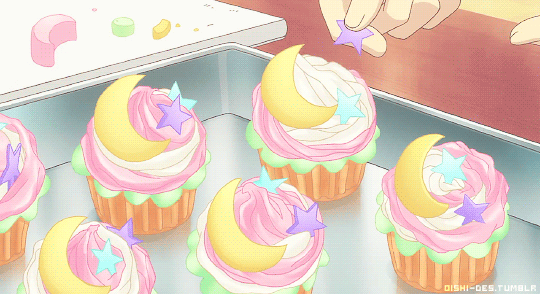

Cupcakes

An amended Cupcake recipe from the The Hummingbird Bakery
Ingredients required
- 120g plain flour
- 140g golden caster sugar
- 1 ½ tsp baking powder
- a pinch of salt
- 40g unsalted butter, at rooom temperature
- 120ml whole milk
- 1 large egg
- ½ vanilla extract
For the frosting:
- 250g icing sugar, sifted
- 80g unsalted butter, at room temperature
- 25ml whole milk
- a couple of drops of vanilla extract
You will also need:
- hundreds and thousands or other edible sprinkles, to decorate
- food colouring (optional)
- a muffin tray, lined with paper cases
Instructions
- To make this cupcake recipe, preheat the oven to 170°C.
- Put the flour, sugar, baking powder, salt and butter in a freestanding electric mixer with a paddle attachment (or use a handheld electric whisk) and beat on slow speed until you get a sandy consistency and everything is combined. Gradually pour in half the milk and beat until the milk is just incorporated.
- Whisk the egg, vanilla extract and remaining milk together in a separate bowl for a few seconds, then pour into the flour mixture and continue beating until just incorporated (scrape any unmixed ingredients from the side of the bowl with a rubber spatula). Continue mixing for a couple more minutes until the mixture is smooth. Do not overmix.
- Spoon the mixture into the paper cases until two-thirds full and bake in the preheated oven for 18–20 minutes, or until light golden and the sponge bounces back when touched.
- A skewer inserted in the centre should come out clean. Leave the cupcakes to cool slightly in the tray before turning out onto a wire cooling rack to cool completely.
- When the cupcakes are cold, spoon the vanilla frosting on top and decorate with hundreds and thousands.
- Beat the icing sugar and butter together in a freestanding electric mixer with a paddle attachment (or use a handheld electric whisk) on medium-slow speed until the mixture comes together and is well mixed.
- Turn the mixer down to slow speed. Combine the milk and vanilla extract in a separate bowl, then add to the butter mixture a couple of tablespoons at a time. Once all the milk has been incorporated, turn the mixer up to high speed.
- Continue beating until the frosting is light and fluffy, at least 5 minutes. The longer the frosting is beaten, the fluffier and lighter it becomes.